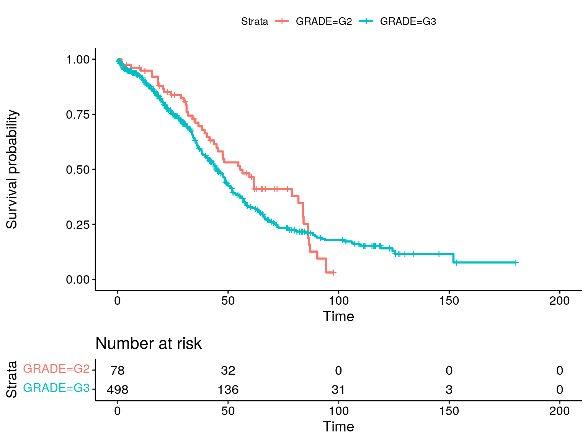

Last updated: 2023-11-01
Checks: 6 1
Knit directory: muse/
This reproducible R Markdown analysis was created with workflowr (version 1.7.1). The Checks tab describes the reproducibility checks that were applied when the results were created. The Past versions tab lists the development history.
Great! Since the R Markdown file has been committed to the Git repository, you know the exact version of the code that produced these results.
Great job! The global environment was empty. Objects defined in the global environment can affect the analysis in your R Markdown file in unknown ways. For reproduciblity it’s best to always run the code in an empty environment.
The command set.seed(20200712) was run prior to running
the code in the R Markdown file. Setting a seed ensures that any results
that rely on randomness, e.g. subsampling or permutations, are
reproducible.
Great job! Recording the operating system, R version, and package versions is critical for reproducibility.
To ensure reproducibility of the results, delete the cache directory
cbioportal_cache and re-run the analysis. To have workflowr
automatically delete the cache directory prior to building the file, set
delete_cache = TRUE when running wflow_build()
or wflow_publish().
Great job! Using relative paths to the files within your workflowr project makes it easier to run your code on other machines.
Great! You are using Git for version control. Tracking code development and connecting the code version to the results is critical for reproducibility.
The results in this page were generated with repository version 9bf5d39. See the Past versions tab to see a history of the changes made to the R Markdown and HTML files.
Note that you need to be careful to ensure that all relevant files for
the analysis have been committed to Git prior to generating the results
(you can use wflow_publish or
wflow_git_commit). workflowr only checks the R Markdown
file, but you know if there are other scripts or data files that it
depends on. Below is the status of the Git repository when the results
were generated:
Ignored files:
Ignored: .Rhistory
Ignored: .Rproj.user/
Ignored: analysis/cbioportal_cache/
Ignored: r_packages_4.3.1/
Ignored: r_packages_4.3.2/
Untracked files:
Untracked: analysis/cell_ranger.Rmd
Untracked: analysis/complex_heatmap.Rmd
Untracked: analysis/sleuth.Rmd
Untracked: analysis/tss_xgboost.Rmd
Untracked: code/multiz100way/
Untracked: data/HG00702_SH089_CHSTrio.chr1.vcf.gz
Untracked: data/HG00702_SH089_CHSTrio.chr1.vcf.gz.tbi
Untracked: data/ncrna_NONCODE[v3.0].fasta.tar.gz
Untracked: data/ncrna_noncode_v3.fa
Untracked: data/netmhciipan.out.gz
Untracked: data/test
Untracked: export/davetang039sblog.WordPress.2023-06-30.xml
Untracked: export/output/
Untracked: women.json
Unstaged changes:
Modified: analysis/graph.Rmd
Note that any generated files, e.g. HTML, png, CSS, etc., are not included in this status report because it is ok for generated content to have uncommitted changes.
These are the previous versions of the repository in which changes were
made to the R Markdown (analysis/cbioportal.Rmd) and HTML
(docs/cbioportal.html) files. If you’ve configured a remote
Git repository (see ?wflow_git_remote), click on the
hyperlinks in the table below to view the files as they were in that
past version.
| File | Version | Author | Date | Message |
|---|---|---|---|---|
| Rmd | 9bf5d39 | Dave Tang | 2023-11-01 | cBioPortal |
Following the vignette.
The cBioPortalData package was developed to allow programmatical access to the data resources available on the cBioPortal using R.
The MultiAssayExperiment package is used to integrate, represent, and coordinate multiple experiments for the studies availble in the cBioPortal. This package in conjunction with curatedTCGAData give access to a large trove of publicly available bioinformatic data.
The AnVIL is a cloud computing resource developed in part by the National Human Genome Research Institute. The AnVIL package provides end-user and developer functionality. For the end-user, AnVIL provides fast binary package installation, utitlities for working with Terra / AnVIL table and data resources, and convenient functions for file movement to and from Google cloud storage. For developers, AnVIL provides programatic access to the Terra, Leonardo, Rawls, and Dockstore RESTful programming interface, including helper functions to transform JSON responses to formats more amenable to manipulation in R.
if (!require("BiocManager", quietly = TRUE))
install.packages("BiocManager")
BiocManager::install("AnVIL")
BiocManager::install("cBioPortalData")Load packages.
library("AnVIL")
library("cBioPortalData")
packageVersion("AnVIL")[1] '1.14.0'packageVersion("cBioPortalData")[1] '2.14.0'Identifying available studies.
cbio <- cBioPortal()
studies <- getStudies(cbio, buildReport = TRUE)
dim(studies)[1] 393 15The api_build and pack_build columns will
show the availability of each studyId for either download
method: cBioPortalData and cBioDataPack,
respectively.
studies |>
dplyr::select(studyId, allSampleCount, api_build, pack_build) |>
head()# A tibble: 6 × 4
studyId allSampleCount api_build pack_build
<chr> <int> <lgl> <lgl>
1 acc_tcga 92 TRUE TRUE
2 laml_tcga 200 TRUE TRUE
3 blca_tcga 413 TRUE TRUE
4 brca_tcga 1108 TRUE TRUE
5 kirc_tcga 538 TRUE TRUE
6 cesc_tcga 310 TRUE TRUE There are two main user-facing functions for downloading data from the cBioPortal API.
cBioDataPack makes use of the tarball distribution
of study data. This is useful when the user wants to download and
analyze the entirety of the data as available from the cBioPortal.org
website.
cBioPortalData allows a more flexible approach to
obtaining study data based on the available parameters such as molecular
profile identifiers. This option is useful for users who have a set of
gene symbols or identifiers and would like to get a smaller subset of
the data that correspond to a particular molecular profile.
idx <- grep("ovarian", studies$name, ignore.case = TRUE)
studies[idx, ] |>
dplyr::select(studyId, allSampleCount, api_build, pack_build) |>
head()# A tibble: 6 × 4
studyId allSampleCount api_build pack_build
<chr> <int> <lgl> <lgl>
1 ov_tcga 617 TRUE TRUE
2 lgsoc_mapk_msk_2022 119 TRUE TRUE
3 ov_tcga_pub 489 TRUE TRUE
4 hgsoc_msk_2021 45 TRUE TRUE
5 msk_spectrum_tme_2022 82 FALSE TRUE
6 ov_tcga_pan_can_atlas_2018 585 TRUE FALSE Download ov_tcga study.
ov_tcga <- cBioDataPack("ov_tcga", ask = FALSE)Warning in .find_seqnames_col(df_colnames0, seqnames.field0, xfix): cannnot
determine seqnames column unambiguously
Warning in .find_seqnames_col(df_colnames0, seqnames.field0, xfix): cannnot
determine seqnames column unambiguously
Warning in .find_seqnames_col(df_colnames0, seqnames.field0, xfix): cannnot
determine seqnames column unambiguously
Warning in .find_seqnames_col(df_colnames0, seqnames.field0, xfix): cannnot
determine seqnames column unambiguously
Warning in .find_seqnames_col(df_colnames0, seqnames.field0, xfix): cannnot
determine seqnames column unambiguously
Warning in .find_seqnames_col(df_colnames0, seqnames.field0, xfix): cannnot
determine seqnames column unambiguouslyWarning in .find_with_xfix(df_colnames, get(paste0(fix, 1)), get(paste0(fix, :
Multiple prefixes found, using keyword 'region' or taking first one
Warning in .find_with_xfix(df_colnames, get(paste0(fix, 1)), get(paste0(fix, :
Multiple prefixes found, using keyword 'region' or taking first oneov_tcgaA MultiAssayExperiment object of 18 listed
experiments with user-defined names and respective classes.
Containing an ExperimentList class object of length 18:
[1] cna_hg19.seg: RaggedExperiment with 211614 rows and 597 columns
[2] cna: SummarizedExperiment with 24776 rows and 579 columns
[3] linear_cna: SummarizedExperiment with 24776 rows and 579 columns
[4] methylation_hm27: SummarizedExperiment with 14874 rows and 592 columns
[5] mrna_affymetrix_microarray_zscores_ref_all_samples: SummarizedExperiment with 12042 rows and 535 columns
[6] mrna_affymetrix_microarray_zscores_ref_diploid_samples: SummarizedExperiment with 11884 rows and 535 columns
[7] mrna_affymetrix_microarray: SummarizedExperiment with 12042 rows and 535 columns
[8] mrna_agilent_microarray_zscores_ref_all_samples: SummarizedExperiment with 17814 rows and 558 columns
[9] mrna_agilent_microarray_zscores_ref_diploid_samples: SummarizedExperiment with 16617 rows and 558 columns
[10] mrna_agilent_microarray: SummarizedExperiment with 17814 rows and 558 columns
[11] mrna_seq_v2_rsem_zscores_ref_all_samples: SummarizedExperiment with 20531 rows and 307 columns
[12] mrna_seq_v2_rsem_zscores_ref_diploid_samples: SummarizedExperiment with 20440 rows and 307 columns
[13] mrna_seq_v2_rsem: SummarizedExperiment with 20531 rows and 307 columns
[14] mutations: RaggedExperiment with 20215 rows and 316 columns
[15] protein_quantification_zscores: SummarizedExperiment with 8896 rows and 174 columns
[16] protein_quantification: SummarizedExperiment with 8935 rows and 174 columns
[17] rppa_zscores: SummarizedExperiment with 207 rows and 436 columns
[18] rppa: SummarizedExperiment with 208 rows and 436 columns
Functionality:
experiments() - obtain the ExperimentList instance
colData() - the primary/phenotype DataFrame
sampleMap() - the sample coordination DataFrame
`$`, `[`, `[[` - extract colData columns, subset, or experiment
*Format() - convert into a long or wide DataFrame
assays() - convert ExperimentList to a SimpleList of matrices
exportClass() - save data to flat files
Warning: The above code chunk cached its results, but
it won’t be re-run if previous chunks it depends on are updated. If you
need to use caching, it is highly recommended to also set
knitr::opts_chunk$set(autodep = TRUE) at the top of the
file (in a chunk that is not cached). Alternatively, you can customize
the option dependson for each individual chunk that is
cached. Using either autodep or dependson will
remove this warning. See the
knitr cache options for more details.
Info on ov_tcga_pan_can_atlas_2018.
studies |>
dplyr::filter(studyId == "ov_tcga_pan_can_atlas_2018") |>
t() [,1]
name "Ovarian Serous Cystadenocarcinoma (TCGA, PanCancer Atlas)"
description "Ovarian Serous Cystadenocarcinoma TCGA PanCancer data. The original data is <a href=\"https://gdc.cancer.gov/about-data/publications/pancanatlas\">here</a>. The publications are <a href=\"https://www.cell.com/pb-assets/consortium/pancanceratlas/pancani3/index.html\">here</a>."
publicStudy "TRUE"
groups "PUBLIC;PANCAN"
status "0"
importDate "2023-08-14 23:04:37"
allSampleCount "585"
readPermission "TRUE"
studyId "ov_tcga_pan_can_atlas_2018"
cancerTypeId "hgsoc"
referenceGenome "hg19"
pmid "29625048,29596782,29622463,29617662,29625055,29625050,29617662,30643250,32214244,29625049,29850653"
citation "TCGA, Cell 2018"
api_build "TRUE"
pack_build "FALSE" Using colData.
colnames(colData(ov_tcga)) [1] "PATIENT_ID"
[2] "SAMPLE_ID"
[3] "OTHER_SAMPLE_ID"
[4] "SPECIMEN_CURRENT_WEIGHT"
[5] "DAYS_TO_COLLECTION"
[6] "DAYS_TO_SPECIMEN_COLLECTION"
[7] "SPECIMEN_FREEZING_METHOD"
[8] "SAMPLE_INITIAL_WEIGHT"
[9] "SPECIMEN_SECOND_LONGEST_DIMENSION"
[10] "IS_FFPE"
[11] "LONGEST_DIMENSION"
[12] "METHOD_OF_SAMPLE_PROCUREMENT"
[13] "OCT_EMBEDDED"
[14] "OTHER_METHOD_OF_SAMPLE_PROCUREMENT"
[15] "PATHOLOGY_REPORT_FILE_NAME"
[16] "PATHOLOGY_REPORT_UUID"
[17] "SAMPLE_TYPE"
[18] "SAMPLE_TYPE_ID"
[19] "SHORTEST_DIMENSION"
[20] "TIME_BETWEEN_CLAMPING_AND_FREEZING"
[21] "TIME_BETWEEN_EXCISION_AND_FREEZING"
[22] "VIAL_NUMBER"
[23] "ONCOTREE_CODE"
[24] "CANCER_TYPE"
[25] "CANCER_TYPE_DETAILED"
[26] "PRIMARY_SITE"
[27] "TUMOR_TISSUE_SITE"
[28] "SOMATIC_STATUS"
[29] "TMB_NONSYNONYMOUS"
[30] "OTHER_PATIENT_ID"
[31] "FORM_COMPLETION_DATE"
[32] "PROSPECTIVE_COLLECTION"
[33] "RETROSPECTIVE_COLLECTION"
[34] "SEX"
[35] "RACE"
[36] "ETHNICITY"
[37] "JEWISH_RELIGION_HERITAGE_INDICATOR"
[38] "HISTORY_OTHER_MALIGNANCY"
[39] "HISTORY_NEOADJUVANT_TRTYN"
[40] "INITIAL_PATHOLOGIC_DX_YEAR"
[41] "METHOD_OF_INITIAL_SAMPLE_PROCUREMENT"
[42] "METHOD_OF_INITIAL_SAMPLE_PROCUREMENT_OTHER"
[43] "TUMOR_STATUS"
[44] "GRADE"
[45] "RESIDUAL_TUMOR"
[46] "VASCULAR_INVASION_INDICATOR"
[47] "LYMPHOVASCULAR_INVASION_INDICATOR"
[48] "KARNOFSKY_PERFORMANCE_SCORE"
[49] "ECOG_SCORE"
[50] "PERFORMANCE_STATUS_TIMING"
[51] "RADIATION_TREATMENT_ADJUVANT"
[52] "PHARMACEUTICAL_TX_ADJUVANT"
[53] "TREATMENT_OUTCOME_FIRST_COURSE"
[54] "DAYS_TO_TUMOR_PROGRESSION"
[55] "NEW_TUMOR_EVENT_AFTER_INITIAL_TREATMENT"
[56] "AGE"
[57] "CLIN_M_STAGE"
[58] "CLIN_N_STAGE"
[59] "CLIN_T_STAGE"
[60] "CLINICAL_STAGE"
[61] "DAYS_TO_INITIAL_PATHOLOGIC_DIAGNOSIS"
[62] "DAYS_TO_PATIENT_PROGRESSION_FREE"
[63] "DISEASE_CODE"
[64] "EXTRANODAL_INVOLVEMENT"
[65] "HISTOLOGICAL_DIAGNOSIS"
[66] "ICD_10"
[67] "ICD_O_3_HISTOLOGY"
[68] "ICD_O_3_SITE"
[69] "INFORMED_CONSENT_VERIFIED"
[70] "PATH_M_STAGE"
[71] "PATH_N_STAGE"
[72] "PATH_T_STAGE"
[73] "AJCC_PATHOLOGIC_TUMOR_STAGE"
[74] "PROJECT_CODE"
[75] "STAGE_OTHER"
[76] "AJCC_STAGING_EDITION"
[77] "TISSUE_SOURCE_SITE"
[78] "OS_STATUS"
[79] "OS_MONTHS"
[80] "DFS_STATUS"
[81] "DFS_MONTHS" Check out the data.
colData(ov_tcga)[1:6, 1:6]DataFrame with 6 rows and 6 columns
PATIENT_ID SAMPLE_ID OTHER_SAMPLE_ID
<character> <character> <character>
TCGA-04-1331 TCGA-04-1331 TCGA-04-1331-01 a1ec9279-c1a6-4e58-9..
TCGA-04-1332 TCGA-04-1332 TCGA-04-1332-01 b8243412-b7b4-4a7b-b..
TCGA-04-1335 TCGA-04-1335 TCGA-04-1335-01 b7f485a3-5ef3-4f76-9..
TCGA-04-1336 TCGA-04-1336 TCGA-04-1336-01 28428f8d-2361-410d-9..
TCGA-04-1337 TCGA-04-1337 TCGA-04-1337-01 d8ab03a2-3dc9-433f-b..
TCGA-04-1338 TCGA-04-1338 TCGA-04-1338-01 7b90d4ab-6c0a-4428-9..
SPECIMEN_CURRENT_WEIGHT DAYS_TO_COLLECTION
<character> <character>
TCGA-04-1331 [Not Available] [Not Available]
TCGA-04-1332 [Not Available] [Not Available]
TCGA-04-1335 [Not Available] [Not Available]
TCGA-04-1336 [Not Available] [Not Available]
TCGA-04-1337 [Not Available] [Not Available]
TCGA-04-1338 [Not Available] [Not Available]
DAYS_TO_SPECIMEN_COLLECTION
<character>
TCGA-04-1331 [Not Available]
TCGA-04-1332 [Not Available]
TCGA-04-1335 [Not Available]
TCGA-04-1336 [Not Available]
TCGA-04-1337 [Not Available]
TCGA-04-1338 [Not Available]Check what metadata is available.
apply(colData(ov_tcga), 2, function(x){
y = factor(x != "[Not Available]" & x != "[Not Applicable]", levels = c(TRUE, FALSE))
table(y)
}) |>
rbind.data.frame() |>
t() TRUE FALSE
PATIENT_ID 614 0
SAMPLE_ID 614 0
OTHER_SAMPLE_ID 596 12
SPECIMEN_CURRENT_WEIGHT 0 608
DAYS_TO_COLLECTION 10 598
DAYS_TO_SPECIMEN_COLLECTION 0 608
SPECIMEN_FREEZING_METHOD 0 608
SAMPLE_INITIAL_WEIGHT 10 598
SPECIMEN_SECOND_LONGEST_DIMENSION 576 32
IS_FFPE 596 12
LONGEST_DIMENSION 576 32
METHOD_OF_SAMPLE_PROCUREMENT 0 608
OCT_EMBEDDED 10 598
OTHER_METHOD_OF_SAMPLE_PROCUREMENT 0 608
PATHOLOGY_REPORT_FILE_NAME 586 22
PATHOLOGY_REPORT_UUID 586 22
SAMPLE_TYPE 614 0
SAMPLE_TYPE_ID 614 0
SHORTEST_DIMENSION 576 32
TIME_BETWEEN_CLAMPING_AND_FREEZING 0 608
TIME_BETWEEN_EXCISION_AND_FREEZING 0 608
VIAL_NUMBER 596 12
ONCOTREE_CODE 614 0
CANCER_TYPE 614 0
CANCER_TYPE_DETAILED 614 0
PRIMARY_SITE 569 34
TUMOR_TISSUE_SITE 603 0
SOMATIC_STATUS 614 0
TMB_NONSYNONYMOUS 316 0
OTHER_PATIENT_ID 603 0
FORM_COMPLETION_DATE 603 0
PROSPECTIVE_COLLECTION 17 586
RETROSPECTIVE_COLLECTION 17 586
SEX 603 0
RACE 572 31
ETHNICITY 356 247
JEWISH_RELIGION_HERITAGE_INDICATOR 24 579
HISTORY_OTHER_MALIGNANCY 11 592
HISTORY_NEOADJUVANT_TRTYN 603 0
INITIAL_PATHOLOGIC_DX_YEAR 603 0
METHOD_OF_INITIAL_SAMPLE_PROCUREMENT 594 9
METHOD_OF_INITIAL_SAMPLE_PROCUREMENT_OTHER 0 603
TUMOR_STATUS 530 73
GRADE 599 4
RESIDUAL_TUMOR 62 541
VASCULAR_INVASION_INDICATOR 168 435
LYMPHOVASCULAR_INVASION_INDICATOR 224 379
KARNOFSKY_PERFORMANCE_SCORE 87 516
ECOG_SCORE 132 471
PERFORMANCE_STATUS_TIMING 205 398
RADIATION_TREATMENT_ADJUVANT 9 594
PHARMACEUTICAL_TX_ADJUVANT 10 593
TREATMENT_OUTCOME_FIRST_COURSE 9 594
DAYS_TO_TUMOR_PROGRESSION 0 603
NEW_TUMOR_EVENT_AFTER_INITIAL_TREATMENT 8 595
AGE 603 0
CLIN_M_STAGE 0 603
CLIN_N_STAGE 0 603
CLIN_T_STAGE 0 603
CLINICAL_STAGE 598 5
DAYS_TO_INITIAL_PATHOLOGIC_DIAGNOSIS 603 0
DAYS_TO_PATIENT_PROGRESSION_FREE 0 603
DISEASE_CODE 0 603
EXTRANODAL_INVOLVEMENT 0 603
HISTOLOGICAL_DIAGNOSIS 603 0
ICD_10 603 0
ICD_O_3_HISTOLOGY 603 0
ICD_O_3_SITE 603 0
INFORMED_CONSENT_VERIFIED 603 0
PATH_M_STAGE 0 603
PATH_N_STAGE 0 603
PATH_T_STAGE 0 603
AJCC_PATHOLOGIC_TUMOR_STAGE 0 603
PROJECT_CODE 0 603
STAGE_OTHER 0 603
AJCC_STAGING_EDITION 0 603
TISSUE_SOURCE_SITE 603 0
OS_STATUS 601 2
OS_MONTHS 598 5
DFS_STATUS 515 88
DFS_MONTHS 513 90Other metadata.
metadata(ov_tcga)$type_of_cancer
[1] "hgsoc"
$cancer_study_identifier
[1] "ov_tcga"
$name
[1] "Ovarian Serous Cystadenocarcinoma (TCGA, Firehose Legacy)"
$short_name
[1] "Ovarian (TCGA)"
$description
[1] "TCGA Ovarian Serous Cystadenocarcinoma. Source data from <A HREF=\"http://gdac.broadinstitute.org/runs/stddata__2016_01_28/data/OV/20160128/\">GDAC Firehose</A>. Previously known as TCGA Provisional."
$groups
[1] "PUBLIC"
$LICENSE
[1] "TCGA data are available under Broad Institute GDAC TCGA Analysis Pipeline License. The Cancer Genome Atlas Consortium is pleased to provide the research community with preliminary data prior to publication. Users are requested to carefully consider that these data are preliminary and have yet to be validated. Researchers are warned that the preliminary data have a significant uncertainty, are likely to change, and should be used with caution."
$phosphoprotein_quantification
DataFrame with 17298 rows and 72 columns
ENTITY_STABLE_ID GENE_SYMBOL PHOSPHOSITE TCGA-13-1484-01
<character> <character> <character> <numeric>
1 A2M_pT118_T119 A2M pT118_T119 NA
2 AAAS_pS462 AAAS pS462 0.656282
3 AAK1_pS14 AAK1 pS14 NA
4 AAK1_pS18 AAK1 pS18 NA
5 AAK1_pS21 AAK1 pS21 NA
... ... ... ... ...
17294 ZZEF1_pS240 ZZEF1 pS240 NA
17295 ZZEF1_pY1358_S1361 ZZEF1 pY1358_S1361 NA
17296 ZZZ3_pS89 ZZZ3 pS89 -0.8374170
17297 ZZZ3_pS113 ZZZ3 pS113 0.0555584
17298 ZZZ3_pS606 ZZZ3 pS606 NA
TCGA-13-1489-01 TCGA-13-1494-01 TCGA-13-1499-01 TCGA-13-2071-01
<numeric> <numeric> <numeric> <numeric>
1 NA NA NA NA
2 -0.161262 -0.548392 NA 0.12526
3 NA NA NA NA
4 NA NA NA NA
5 NA NA NA NA
... ... ... ... ...
17294 NA NA NA NA
17295 NA NA NA NA
17296 NA NA -0.987601 NA
17297 -2.6773 -0.851763 -1.660487 -0.444616
17298 NA NA NA NA
TCGA-23-1123-01 TCGA-23-1124-01 TCGA-24-1103-01 TCGA-24-1104-01
<numeric> <numeric> <numeric> <numeric>
1 NA NA NA NA
2 0.595251 0.00740225 0.954774 -0.530232
3 NA NA NA NA
4 NA 1.53167399 NA NA
5 NA NA NA NA
... ... ... ... ...
17294 0.896654 NA NA NA
17295 NA NA NA NA
17296 NA NA 0.0520518 NA
17297 1.100200 1.063379 0.6522534 0.641384
17298 NA 0.772578 NA NA
TCGA-24-1428-01 TCGA-24-1430-01 TCGA-24-1435-01 TCGA-24-1466-01
<numeric> <numeric> <numeric> <numeric>
1 NA 0.591738 NA 0.528696
2 1.18232 0.167959 0.403907 0.746070
3 NA NA NA NA
4 NA NA NA NA
5 NA NA NA NA
... ... ... ... ...
17294 NA NA NA NA
17295 NA NA NA NA
17296 -0.377246 NA 0.605491 NA
17297 0.347842 -0.0190307 0.198260 0.592919
17298 NA NA NA NA
TCGA-24-1467-01 TCGA-24-1545-01 TCGA-24-1550-01 TCGA-24-1551-01
<numeric> <numeric> <numeric> <numeric>
1 NA NA NA NA
2 1.09202 -0.685343 NA -1.19004
3 NA NA NA NA
4 NA NA NA NA
5 NA NA NA NA
... ... ... ... ...
17294 NA NA NA NA
17295 NA -0.187857 NA NA
17296 NA NA NA -0.287681
17297 0.977295 NA -0.403332 -0.723855
17298 NA NA NA NA
TCGA-24-1552-01 TCGA-24-1553-01 TCGA-24-1555-01 TCGA-24-1556-01
<numeric> <numeric> <numeric> <numeric>
1 0.038756 NA NA NA
2 0.758834 0.73522 NA NA
3 NA NA NA NA
4 NA NA NA NA
5 NA NA NA NA
... ... ... ... ...
17294 NA -0.1532049 NA NA
17295 NA NA NA NA
17296 NA NA NA NA
17297 -0.402299 0.0192374 0.372348 NA
17298 NA NA NA NA
TCGA-24-1562-01 TCGA-24-1563-01 TCGA-24-1603-01 TCGA-24-1604-01
<numeric> <numeric> <numeric> <numeric>
1 NA NA NA NA
2 0.654638 -0.69073 NA -0.0694959
3 NA NA NA NA
4 NA NA NA NA
5 NA NA NA NA
... ... ... ... ...
17294 NA NA NA NA
17295 NA NA NA NA
17296 1.591936 -0.414516 NA NA
17297 0.534881 -0.377965 0.835599 -0.434167
17298 NA NA NA NA
TCGA-24-1923-01 TCGA-24-2020-01 TCGA-24-2023-01 TCGA-24-2024-01
<numeric> <numeric> <numeric> <numeric>
1 NA NA NA NA
2 -0.145764 0.344364 NA 0.113435
3 NA NA NA NA
4 NA NA NA NA
5 NA NA NA NA
... ... ... ... ...
17294 NA NA NA NA
17295 NA NA NA NA
17296 1.25122 NA NA NA
17297 1.24512 0.32257 0.649997 -0.0603376
17298 NA NA NA NA
TCGA-24-2030-01 TCGA-24-2260-01 TCGA-24-2267-01 TCGA-24-2288-01
<numeric> <numeric> <numeric> <numeric>
1 NA NA NA NA
2 0.97305 NA NA -0.767781
3 NA NA NA NA
4 NA NA NA NA
5 NA NA NA NA
... ... ... ... ...
17294 NA NA NA NA
17295 NA NA NA -0.268827
17296 NA NA NA NA
17297 0.953468 NA NA NA
17298 NA NA NA NA
TCGA-24-2289-01 TCGA-25-1316-01 TCGA-25-1319-01 TCGA-25-1320-01
<numeric> <numeric> <numeric> <numeric>
1 NA NA NA NA
2 -1.18065 NA -0.514529 0.150659
3 NA NA NA NA
4 NA NA NA NA
5 NA NA NA NA
... ... ... ... ...
17294 NA NA NA NA
17295 NA NA NA NA
17296 NA NA NA NA
17297 -0.733278 0.646214 -0.273141 -0.328474
17298 NA NA NA NA
TCGA-25-1321-01 TCGA-25-1628-01 TCGA-25-1630-01 TCGA-25-1635-01
<numeric> <numeric> <numeric> <numeric>
1 NA NA NA NA
2 0.920739 0.215113 NA 0.982438
3 NA NA NA NA
4 NA NA NA NA
5 NA NA NA NA
... ... ... ... ...
17294 NA NA NA NA
17295 NA NA NA NA
17296 NA NA -0.2197828 NA
17297 0.706303 0.678733 -0.0294928 0.279755
17298 NA NA NA 0.833453
TCGA-25-2400-01 TCGA-25-2404-01 TCGA-25-2409-01 TCGA-29-1688-01
<numeric> <numeric> <numeric> <numeric>
1 NA NA NA NA
2 1.17532 -0.183044 0.529527 1.1672
3 NA NA NA NA
4 NA NA NA NA
5 1.20195 NA 2.122755 NA
... ... ... ... ...
17294 NA NA NA NA
17295 NA NA NA NA
17296 0.477500 NA 1.248140 -0.194494
17297 0.423570 -0.141639 0.405294 0.887746
17298 0.330199 NA 0.956339 NA
TCGA-29-1693-01 TCGA-29-1762-01 TCGA-29-1763-01 TCGA-29-1774-01
<numeric> <numeric> <numeric> <numeric>
1 NA NA NA NA
2 -0.450492 0.393116 1.38442 -0.0349079
3 NA NA NA NA
4 NA NA NA NA
5 NA NA NA NA
... ... ... ... ...
17294 NA NA NA NA
17295 -0.197024 NA NA NA
17296 NA NA NA NA
17297 NA 0.963318 0.443578 0.199078
17298 NA NA NA NA
TCGA-29-1775-01 TCGA-29-1776-01 TCGA-29-1777-01 TCGA-29-2414-01
<numeric> <numeric> <numeric> <numeric>
1 NA NA NA NA
2 NA -0.12606 -0.76785 -0.0616305
3 NA NA NA NA
4 NA NA NA NA
5 NA NA NA NA
... ... ... ... ...
17294 NA NA NA NA
17295 NA NA NA NA
17296 0.801626 0.0852126 0.2152399 -0.169122
17297 0.910467 -0.1869118 -0.0157217 -0.371031
17298 NA NA NA NA
TCGA-29-2432-01 TCGA-30-1866-01 TCGA-36-1576-01 TCGA-36-1581-01
<numeric> <numeric> <numeric> <numeric>
1 NA NA NA NA
2 -0.0833078 0.324019 0.0340875 0.292088
3 NA NA NA NA
4 NA NA NA NA
5 NA 2.004179 NA NA
... ... ... ... ...
17294 NA NA NA 0.928193
17295 NA NA NA NA
17296 NA 0.726803 NA NA
17297 0.661042 1.048370 -0.140494 -0.407089
17298 NA 0.696386 NA NA
TCGA-36-2529-01 TCGA-36-2530-01 TCGA-36-2543-01 TCGA-42-2588-01
<numeric> <numeric> <numeric> <numeric>
1 NA NA NA NA
2 1.11116 1.212605 0.245928 -0.378921
3 1.40503 NA NA NA
4 1.40503 NA NA NA
5 NA 0.237485 NA NA
... ... ... ... ...
17294 NA NA NA NA
17295 NA NA NA NA
17296 NA 0.0274117 NA NA
17297 0.403777 1.2203824 0.343532 -0.11901
17298 NA NA NA NA
TCGA-42-2590-01 TCGA-61-1741-01 TCGA-61-1907-01 TCGA-61-1919-01
<numeric> <numeric> <numeric> <numeric>
1 NA NA NA NA
2 0.149968 0.724946 0.348663 0.765012
3 0.110142 NA NA NA
4 0.110142 NA NA NA
5 NA NA NA NA
... ... ... ... ...
17294 NA NA NA NA
17295 NA NA NA NA
17296 NA NA NA NA
17297 0.103413 -0.0357064 0.405252 0.299033
17298 NA NA 0.349702 NA
TCGA-61-1995-01 TCGA-61-2008-01 TCGA-61-2095-01 TCGA-61-2612-01
<numeric> <numeric> <numeric> <numeric>
1 NA NA NA NA
2 0.682223 -0.0858494 0.306452 NA
3 NA NA NA NA
4 NA NA NA NA
5 NA NA NA NA
... ... ... ... ...
17294 NA NA NA NA
17295 NA NA NA NA
17296 0.0628499 -0.256756 NA NA
17297 0.2295492 0.354115 -0.428166 0.65481
17298 NA NA NA NA
$data_gistic_genes_amp.txt
GRanges object with 33 ranges and 15 metadata columns:
seqnames ranges strand | index peak_start peak_end
<Rle> <IRanges> <Rle> | <numeric> <numeric> <numeric>
[1] 1 149879545-187230132 * | 1 150647155 150647987
[2] 1 34902439-48048106 * | 2 39940035 39953945
[3] 1 222335377-247812431 * | 3 234491703 234493015
[4] 2 170911427-185010857 * | 4 178522011 178530799
[5] 2 28683174-29230395 * | 5 28851445 28860856
... ... ... ... . ... ... ...
[29] 20 456452-1195665 * | 29 539018 540188
[30] 20 30022925-30360762 * | 30 30246540 30250340
[31] 22 30155113-30374328 * | 31 30200200 30244963
[32] X 46250374-51198707 * | 32 49370374 49370374
[33] X 145879006-154905589 * | 33 153242564 153282677
enlarged_peak_start enlarged_peak_end n_genes_in_region
<numeric> <numeric> <numeric>
[1] 150493147 150738699 13
[2] 39898644 40168674 8
[3] 234417531 235727816 18
[4] 178467257 178609136 2
[5] 28811131 28960178 2
... ... ... ...
[29] 456452 4104510 88
[30] 30062456 30330306 9
[31] 30113960 30692313 11
[32] 48682582 49573489 44
[33] 152900090 154883396 72
genes_in_region n_genes_in_peak genes_in_peak n_genes_on_chip
<character> <numeric> <character> <character>
[1] SNORA40|ENSG00000253.. 1 GOLPH3L, [Not Available]
[2] SNORA55,BMP8A,PABPC4.. 2 BMP8A,MACF1, [Not Available]
[3] MIR4753,SNORA14B,RN7.. 0 [COA6] [Not Available]
[4] TTC30A,PDE11A, 1 PDE11A, [Not Available]
[5] RNA5SP89,PLB1, 1 PLB1, [Not Available]
... ... ... ... ...
[29] MIR103A2,MAVS,U3|ENS.. 0 [CSNK2A1] [Not Available]
[30] LINC00028,BCL2L1,ID1.. 0 [BCL2L1] [Not Available]
[31] MGC20647,LIF,OSM,MTM.. 1 ASCC2, [Not Available]
[32] GAGE1,MAGIX,RN7SL262.. 2 GAGE1,GAGE2A, [Not Available]
[33] F8A3,F8A2,FUNDC2,SNO.. 2 IRAK1,TMEM187, [Not Available]
genes_on_chip top 3 amp cytoband q_value
<character> <character> <numeric> <character> <numeric>
[1] [Not Available] [Not Available] 1 1q21.3 6.2239e-29
[2] [Not Available] [Not Available] 1 1p34.3 7.4284e-27
[3] [Not Available] [Not Available] 1 1q42.2 7.0072e-14
[4] [Not Available] [Not Available] 1 2q31.2 4.0401e-07
[5] [Not Available] [Not Available] 1 2p23.2 2.0798e-02
... ... ... ... ... ...
[29] [Not Available] [Not Available] 1 20p13 5.9168e-02
[30] [Not Available] [Not Available] 1 20q11.21 2.7181e-02
[31] [Not Available] [Not Available] 1 22q12.2 9.2987e-02
[32] [Not Available] [Not Available] 1 Xp11.23 8.1018e-09
[33] [Not Available] [Not Available] 1 Xq28 2.1760e-06
-------
seqinfo: 19 sequences from an unspecified genome; no seqlengths
$data_gistic_genes_del.txt
GRanges object with 40 ranges and 15 metadata columns:
seqnames ranges strand | index peak_start peak_end
<Rle> <IRanges> <Rle> | <numeric> <numeric> <numeric>
[1] 1 3218610-34877819 * | 1 27089566 27093657
[2] 1 214563653-214700671 * | 2 214518638 214726843
[3] 2 141734918-142126389 * | 3 140981064 142891872
[4] 2 221159964-242476062 * | 4 241391025 242434726
[5] 2 484222-1917729 * | 5 484222 484222
... ... ... ... . ... ... ...
[36] 19 40552390-58878226 * | 36 58580277 58581977
[37] 19 40552390-58878226 * | 37 48471109 48497199
[38] 21 44884252-47678295 * | 38 46254611 46297668
[39] 22 40736472-49331012 * | 39 49331012 49331012
[40] X 31553891-32237711 * | 40 30873422 34033463
enlarged_peak_start enlarged_peak_end n_genes_in_region
<numeric> <numeric> <numeric>
[1] 26984229 27556457 15
[2] 207319570 220698097 80
[3] 140782681 143627097 2
[4] 234986392 242476062 73
[5] 484222 24661362 132
... ... ... ...
[36] 58121209 58878226 46
[37] 46378174 49463131 100
[38] 42520646 47678295 94
[39] 48670715 49331012 42
[40] 30870232 34034134 7
genes_in_region n_genes_in_peak genes_in_peak
<character> <numeric> <character>
[1] GPN2,ZDHHC18,RN7SL16.. 1 RN7SL501P,
[2] SNORA36B,snoU13|ENSG.. 1 PTPN14,
[3] RN7SL283P,LRP1B, 1 LRP1B,
[4] CXXC11,RNA5SP122,MIR.. 20 MIR3133,RNPEPL1,MIR1..
[5] SCARNA21|ENSG0000025.. 4 FAM110C,ACP1,SH3YL1,..
... ... ... ...
[36] RN7SL525P,RN7SL693P,.. 1 RN7SL526P,
[37] RN7SL345P,SEC1P,DBP,.. 1 BSPH1,
[38] S100B,PRED62,PRED60,.. 1 PTTG1IP,
[39] ARSA,RN7SL500P,DENND.. 39 ARSA,RN7SL500P,DENND..
[40] snoU13|ENSG000002389.. 6 snoU13|ENSG000002389..
n_genes_on_chip genes_on_chip top 3 amp cytoband
<character> <character> <character> <numeric> <character>
[1] [Not Available] [Not Available] [Not Available] 0 1p36.11
[2] [Not Available] [Not Available] [Not Available] 0 1q41
[3] [Not Available] [Not Available] [Not Available] 0 2q22.1
[4] [Not Available] [Not Available] [Not Available] 0 2q37.3
[5] [Not Available] [Not Available] [Not Available] 0 2p25.3
... ... ... ... ... ...
[36] [Not Available] [Not Available] [Not Available] 0 19q13.43
[37] [Not Available] [Not Available] [Not Available] 0 19q13.33
[38] [Not Available] [Not Available] [Not Available] 0 21q22.3
[39] [Not Available] [Not Available] [Not Available] 0 22q13.32
[40] [Not Available] [Not Available] [Not Available] 0 Xp21.1
q_value
<numeric>
[1] 3.6326e-35
[2] 1.8187e-01
[3] 2.2138e-11
[4] 7.0161e-09
[5] 8.7942e-02
... ...
[36] 8.1256e-19
[37] 2.4410e-17
[38] 2.2578e-02
[39] 2.4599e-67
[40] 1.1581e-15
-------
seqinfo: 22 sequences from an unspecified genome; no seqlengths
$unmapped
ExperimentList class object of length 0:
Install packages.
install.packages("survival")
install.packages("survminer")Load packages.
library("survival")
library("survminer")Check status.
table(colData(ov_tcga)$OS_STATUS)
[Not Available] 0:LIVING 1:DECEASED
2 240 361 Check months.
class(colData(ov_tcga)$OS_MONTHS)[1] "character"Prepare data.
col_dat <- colData(ov_tcga)
wanted_grade <- col_dat$GRADE == "G2" | col_dat$GRADE == "G3"
col_dat$GRADE[!wanted_grade] <- NA
col_dat$OS_MONTHS <- as.numeric(col_dat$OS_MONTHS)Warning: NAs introduced by coercioncolData(ov_tcga) <- col_datWe specify a simple survival model using tumour grade as a covariate and we draw the K-M plot.
fit <- survfit(
Surv(OS_MONTHS, as.numeric(substr(OS_STATUS, 1, 1))) ~ GRADE,
data = colData(ov_tcga)
)Warning in Surv(OS_MONTHS, as.numeric(substr(OS_STATUS, 1, 1))): NAs introduced
by coercionggsurvplot(fit, data = colData(ov_tcga), risk.table = TRUE)
sessionInfo()R version 4.3.2 (2023-10-31)
Platform: x86_64-pc-linux-gnu (64-bit)
Running under: Ubuntu 22.04.3 LTS
Matrix products: default
BLAS: /usr/lib/x86_64-linux-gnu/openblas-pthread/libblas.so.3
LAPACK: /usr/lib/x86_64-linux-gnu/openblas-pthread/libopenblasp-r0.3.20.so; LAPACK version 3.10.0
locale:
[1] LC_CTYPE=en_US.UTF-8 LC_NUMERIC=C
[3] LC_TIME=en_US.UTF-8 LC_COLLATE=en_US.UTF-8
[5] LC_MONETARY=en_US.UTF-8 LC_MESSAGES=en_US.UTF-8
[7] LC_PAPER=en_US.UTF-8 LC_NAME=C
[9] LC_ADDRESS=C LC_TELEPHONE=C
[11] LC_MEASUREMENT=en_US.UTF-8 LC_IDENTIFICATION=C
time zone: Etc/UTC
tzcode source: system (glibc)
attached base packages:
[1] stats4 stats graphics grDevices utils datasets methods
[8] base
other attached packages:
[1] survminer_0.4.9 ggpubr_0.6.0
[3] ggplot2_3.4.4 survival_3.5-7
[5] cBioPortalData_2.14.0 MultiAssayExperiment_1.28.0
[7] SummarizedExperiment_1.32.0 Biobase_2.62.0
[9] GenomicRanges_1.54.1 GenomeInfoDb_1.38.0
[11] IRanges_2.36.0 S4Vectors_0.40.1
[13] BiocGenerics_0.48.0 MatrixGenerics_1.14.0
[15] matrixStats_1.0.0 AnVIL_1.14.0
[17] dplyr_1.1.3 workflowr_1.7.1
loaded via a namespace (and not attached):
[1] splines_4.3.2 later_1.3.1
[3] BiocIO_1.12.0 bitops_1.0-7
[5] filelock_1.0.2 tibble_3.2.1
[7] RaggedExperiment_1.26.0 XML_3.99-0.14
[9] lifecycle_1.0.3 rstatix_0.7.2
[11] rprojroot_2.0.3 processx_3.8.2
[13] lattice_0.21-9 backports_1.4.1
[15] magrittr_2.0.3 sass_0.4.7
[17] rmarkdown_2.25 jquerylib_0.1.4
[19] yaml_2.3.7 httpuv_1.6.12
[21] DBI_1.1.3 abind_1.4-5
[23] zlibbioc_1.48.0 rvest_1.0.3
[25] purrr_1.0.2 RCurl_1.98-1.12
[27] rappdirs_0.3.3 RTCGAToolbox_2.32.1
[29] git2r_0.32.0 GenomeInfoDbData_1.2.11
[31] KMsurv_0.1-5 commonmark_1.9.0
[33] codetools_0.2-19 DelayedArray_0.28.0
[35] DT_0.30 ggtext_0.1.2
[37] xml2_1.3.5 tidyselect_1.2.0
[39] futile.logger_1.4.3 farver_2.1.1
[41] BiocFileCache_2.10.1 GenomicAlignments_1.38.0
[43] jsonlite_1.8.7 ellipsis_0.3.2
[45] tools_4.3.2 progress_1.2.2
[47] Rcpp_1.0.11 glue_1.6.2
[49] GenomicDataCommons_1.26.0 gridExtra_2.3
[51] SparseArray_1.2.0 BiocBaseUtils_1.4.0
[53] xfun_0.40 withr_2.5.1
[55] formatR_1.14 fastmap_1.1.1
[57] fansi_1.0.5 callr_3.7.3
[59] digest_0.6.33 R6_2.5.1
[61] mime_0.12 colorspace_2.1-0
[63] markdown_1.11 biomaRt_2.58.0
[65] RSQLite_2.3.2 utf8_1.2.4
[67] tidyr_1.3.0 generics_0.1.3
[69] data.table_1.14.8 rtracklayer_1.62.0
[71] prettyunits_1.2.0 httr_1.4.7
[73] htmlwidgets_1.6.2 S4Arrays_1.2.0
[75] RJSONIO_1.3-1.8 whisker_0.4.1
[77] pkgconfig_2.0.3 gtable_0.3.4
[79] blob_1.2.4 XVector_0.42.0
[81] survMisc_0.5.6 htmltools_0.5.6.1
[83] carData_3.0-5 scales_1.2.1
[85] rapiclient_0.1.3 png_0.1-8
[87] knitr_1.44 km.ci_0.5-6
[89] lambda.r_1.2.4 rstudioapi_0.15.0
[91] tzdb_0.4.0 rjson_0.2.21
[93] curl_5.1.0 cachem_1.0.8
[95] zoo_1.8-12 stringr_1.5.0
[97] parallel_4.3.2 miniUI_0.1.1.1
[99] AnnotationDbi_1.64.0 restfulr_0.0.15
[101] pillar_1.9.0 grid_4.3.2
[103] vctrs_0.6.4 promises_1.2.1
[105] car_3.1-2 dbplyr_2.4.0
[107] xtable_1.8-4 evaluate_0.22
[109] readr_2.1.4 GenomicFeatures_1.54.1
[111] cli_3.6.1 compiler_4.3.2
[113] futile.options_1.0.1 Rsamtools_2.18.0
[115] rlang_1.1.1 crayon_1.5.2
[117] ggsignif_0.6.4 labeling_0.4.3
[119] ps_1.7.5 getPass_0.2-2
[121] fs_1.6.3 stringi_1.7.12
[123] BiocParallel_1.36.0 munsell_0.5.0
[125] Biostrings_2.70.1 Matrix_1.6-1.1
[127] hms_1.1.3 bit64_4.0.5
[129] KEGGREST_1.42.0 shiny_1.7.5.1
[131] gridtext_0.1.5 broom_1.0.5
[133] memoise_2.0.1 bslib_0.5.1
[135] bit_4.0.5 TCGAutils_1.22.0